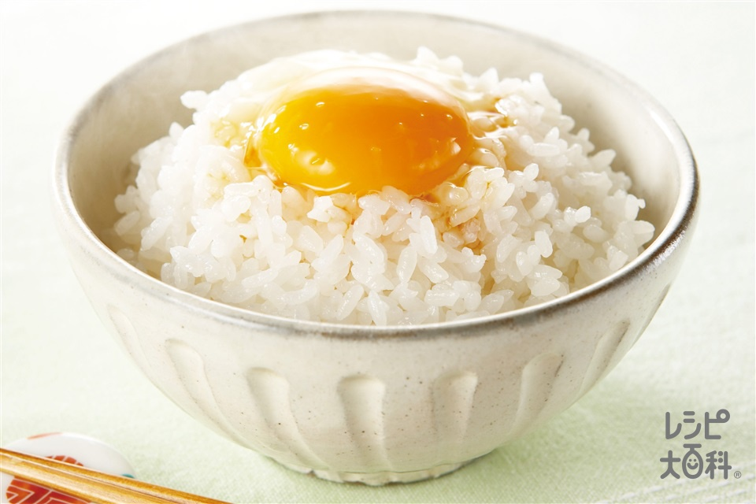

卵かけご飯

Description
This is a classic Japanese dish consisting the most simplest of items. A culmination of Japanese Culture, carbs and a great source of protein are a perfect meal sure to fill you up!
In reality however, it's a simple and intelligent way to cook an egg. It's important to make sure the egg is poured into the center of the rice immediately after the rice has been put into the proper bowl. This is in order to avoid samonella poisening and ensure a rich and nutritous meal as the steaming rice actually cooks the egg itself!
Ingredients
- A pot
- 1 cup of long grain or medium grain rice (medium for execellent quality!)
- 2 cups of water
- One pasterized egg
- A spoon or chopsticks to enjoy the meal!
Steps
- Rinse the rice in a cooking net for 1 to 2 minutes. Make sure to be thouroghly moving the rice around with your clean hands!
- Place the cup of rinse rice into a pot
- Pour 2 cups of water into the pot and put the gas on high
- Wait for the water to boil, feel free to add a bit of salt if you'd like to!
- Once boiling, place a top over the pot and bring the heat down to simmer (lowest it can go on a gas stove)
- Place a timer for 18 minutes and leave it on simmer, don't open the pot!
- Optional!: Once the 18 minutes are up turn off the stove and leave the rice sitting for 10 minutes for more fluffier and puffy rice!
- Quickly place the rice into a bowl and carve a little pit in the center for the egg to sit on. You don't want it running away lol.
- Crack open the egg ontop of the rice and mix!
- Enjoy!